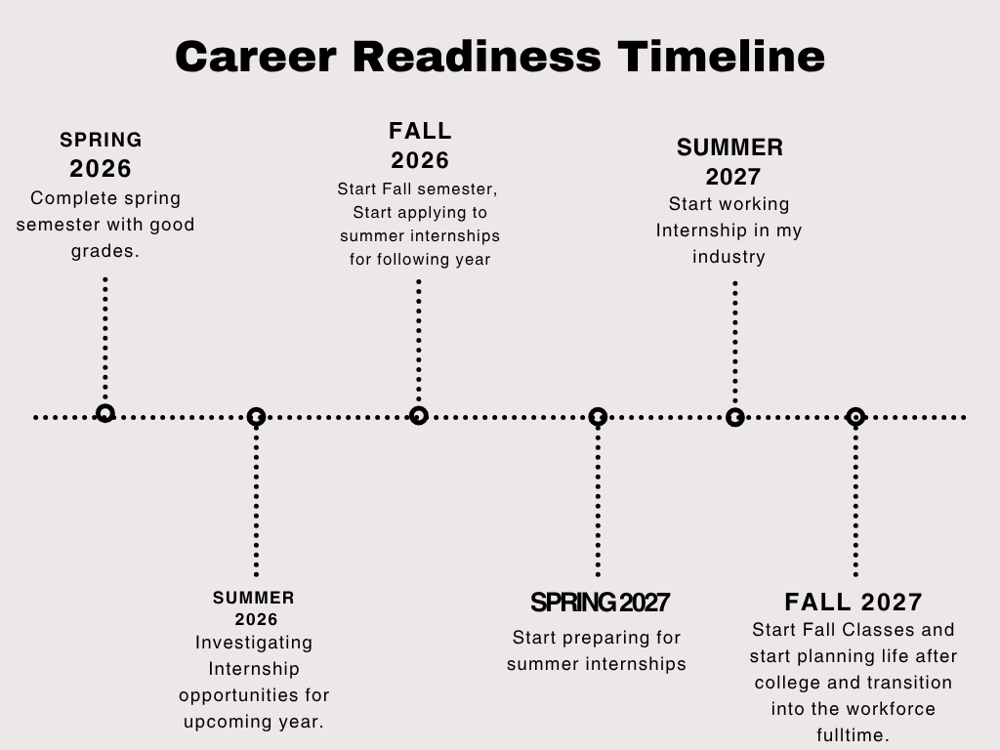
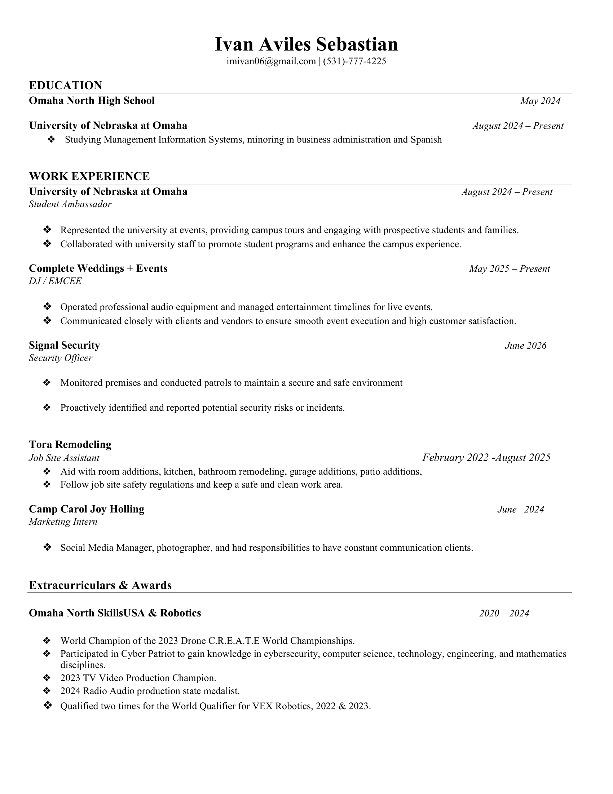

"Hello, welcome to my website! My name is Ivan Aviles Sebastian, feel free to get in contact!"
I am a Management Information Systems student at the University of Nebraska Omaha, passionate about the intersection of technology, business development, and data-driven solutions. I thrive on building efficient systems, whether I am developing business models, analyzing sports data and probabilities, or managing the administrative and technical workflows of my independent DJ business. I am currently focused on exploring roles within the MIS field that allow me to manage complex structures and optimize organizational processes.
My interest in Management Information Systems didn't begin in a university classroom; it started with a lifelong fascination with efficiency. Since my childhood, I have always gravitated toward the mechanics of management. That early niche interest in how things work and how to make them work better naturally evolved into my pursuit of an MIS degree. I enjoy the challenge of looking at a complex structure, identifying the inefficiencies, and implementing streamlined solutions. My ultimate professional goal is to leverage this natural inclination for management to secure a stable, long-term role where I can consistently add value and optimize systems and companies.
I thrive on momentum and flexibility. I am driven to turn concepts into immediate action and adapt seamlessly to whatever the situation requires, whether managing tech strategies or dynamic live events.
I am a natural problem-solver. I excel at diagnosing issues and resolving them to build efficient solutions, from fine-tuning business models to troubleshooting hardware workflows.
Technology is only as good as the people it serves. I use an instinctive understanding of others and strong conversational and presentation skills to bridge the gap between complex systems and human needs.

